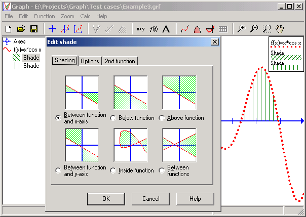

You can insert 6 different types of shadings to mark an area. This can for example be an area between a function and the x-axis, but other possibilities are also available. Of course the user can specify the exact limits of the area.